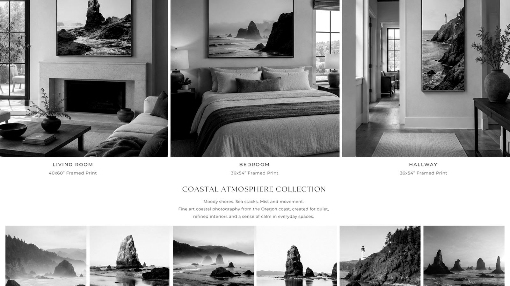
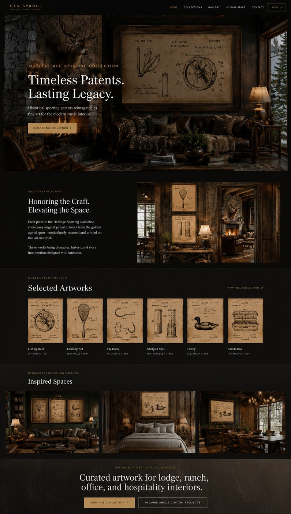

Explore More

Explore related fine art photography collections.
Browse additional atmospheric collections featuring coastal photography, rustic sporting artwork, designer resources, and fine art photography shown in realistic residential and hospitality interiors.

Coastal Atmosphere
Moody Oregon Coast photography for quiet luxury coastal homes and boutique hospitality spaces.

Heritage Sporting
Rustic sporting patent artwork for lodge interiors, mountain homes, offices, and collected spaces.
For Designers
Trade resources, custom sizing, artwork recommendations, and designer-focused support.
In Your Space
View realistic interior mockups showing fine art photography in residential and commercial spaces.